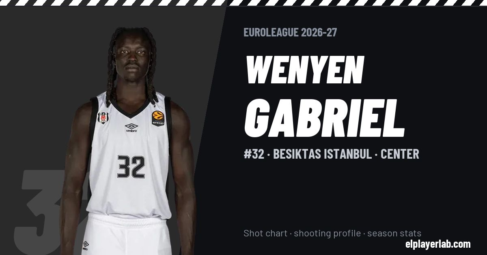

Besiktas Istanbul · Euroleague 2026-27
Wenyen Gabriel
#32 · Center · Besiktas Istanbul · 2026-27 · 2 games · 3.0 pts · 1.0 reb · 0.5 ast a game

- Number
- 32
- Position
- Center
- Height
- 206 cm
- Weight
- 100 kg
- Born
- 1997-03-26
- Country
- United States of America
Career
- Besiktas 2026-2027
- Bayern Munich 2025-2026
- Panathinaikos 2024-2025
- Maccabi Tel Aviv 2024
- Vaqueros de Bayamón 2024
- Memphis Grizzlies (NBA) 2023-2024
- Wisconsin Herd 2023-2024
- Los Angeles Lakers (NBA) 2021-2022
- Los Angeles Clippers (NBA) 2021-2022
- Brooklyn Nets (NBA) 2021-2022
- Wisconsin Herd 2021-2022
- New Orleans Pelicans (NBA) 2020-2021
- Portland Trail Blazers (NBA) 2019-2020
- Stockton Kings (loan) 2018-2019
- Sacramento Kings (NBA) 2018-2019
- Kentucky (NCAA) 2016-2018
Euroleague Player Lab: shot charts, shooting profiles and season stats for every player, rebuilt after every game.